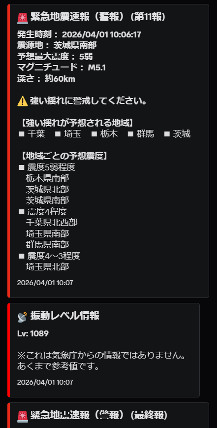
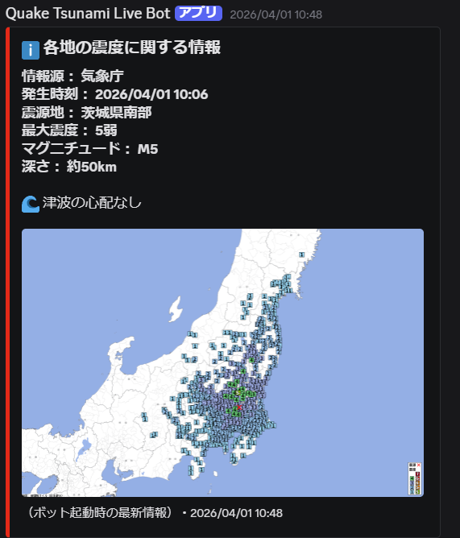
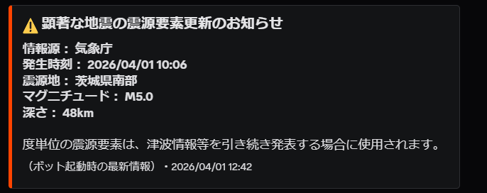
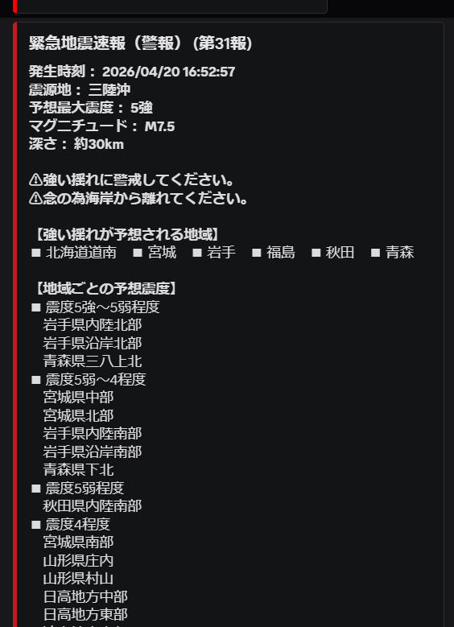
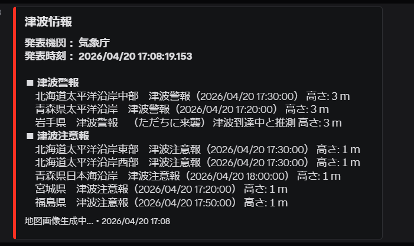
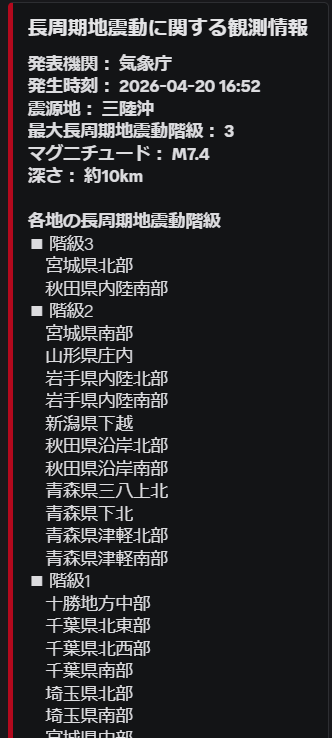
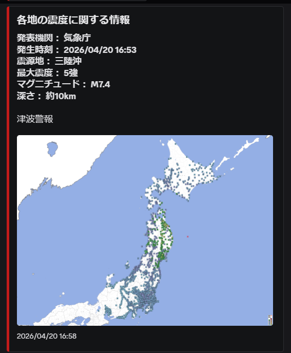
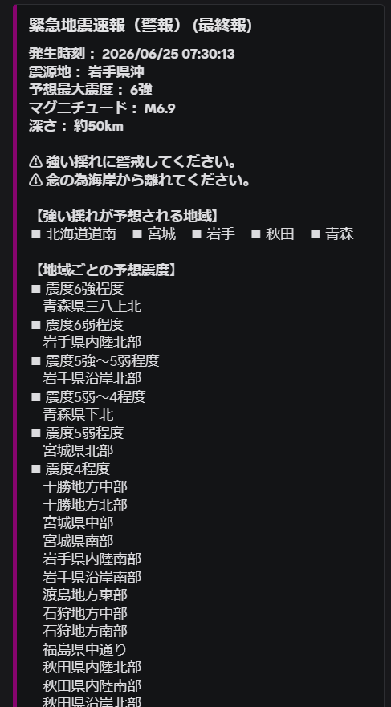

Raspberry Piで地震情報を通知するBot作った話
きっかけ
なぜそんなのを作ろうと思ったのか。それは
地震とかの災害に興味があったから（？）
です。は？って思いますよね～
とりあえずここまでの経緯をお話しさせていただきます。
自分は北陸に住んでいて、能登半島地震（2024年）などを経験しました。 自分が住んでいる地域では、2022年・2023年・2024年と立て続けに地震があり、 最大で震度5強を記録しました。
能登半島地震が発生したとき、自分は家に居ましたが、 いきなりテレビやスマホから警告音が流れてきました。 自分はそのとき「物騒な正月だな」ぐらいにしか思っていませんでした。
その4分後、2回目の大きな揺れが襲いました。本震です。 緊急地震速報の地域が広がっていく様子、ライブ映像で家がつぶれたり 土煙が出たりする様子を見て、ただ混乱するしかなかったです。
揺れが収まって少し安心していたら、日本海沿岸が赤や黄色で塗られている 地図が飛び込んできました。思わず「...は！？」と、ただ茫然としていました。 その後も何度か揺れが続き、心配でいっぱいでした。その夜はあまり眠れませんでした。
開発までの道筋
それから1年後、私はブラウザ上で動作するアプリの開発に着手しました。
使ったのはもちろん！
流 行 り の 人 工 知 能 で す ☆
その頃は、Yahoo!Japan様の強震モニタからJSONを取得→leaflet.jsを使って地図上に表示、というプログラムでした。
ちなみに、それがYahoo!Japan様の規約に触れると判明したため、現在は実質没プロジェクトとなっています。
次に開発したのが、緊急地震速報と地震情報、津波情報をダッシュボードで表示するWebアプリ。
使ったのはもちろん人工知能です。
実際に動作しましたが、なんか物足りないな～と思っていました。
そういうわけで目を付けたのが
D i s c o r d で す ☆
なんでDiscordかというと...まあなんとなくです（）
※実際の理由は、その時期にScratchのアカウントがBAN寸前の状態だったので、「一旦Scratchでの活動はやめよっかな～」というとてもあほくさいものでした）
開発に使ったのはもちろん人工知能です（ｎ回目）
...では、初期のBotの動作を見てみましょう。こちらです。



色々とツッコミどころ満載ですね。
では、現在のBotと比べてみましょう。こちらです。





一目瞭然ですね。
開発で大変だったこと
4000行のbot.pyを8つに分割した話
開発を続けるうちに、最初は数百行だったbot.pyがいつの間にか 4000行を超えるモンスターファイルになっていました。
機能を追加するたびに「どこに何を書いたっけ？」となり、 バグを直そうとして別のバグを生む、という無限ループに突入。 さすがにこれはまずいと思い、discord.pyの「Cog」という機能を使って ファイルを分割するリファクタリングを決行しました。
分割後の構成はこんな感じです。
- EewCog ― 緊急地震速報（Wolfx / P2P EEW）専用
- QuakeInfoCog ― 地震情報・震度速報・P2P地震情報ポーリング
- AudioCog ― 音声読み上げ・MP3再生（EewCog / QuakeInfoCog が共有）
- TsunamiCog ― 津波情報
- VolcanoCog ― 火山情報・噴火速報・噴火警報
- UsgsCog ― 海外地震（USGS）
- OtherInfoCog ― 長周期地震動・気象庁その他情報
- SystemCog ― ステータス・Web Dashboard・エラー監視・リソース監視
- KyoshinMonitorCog ― 強震モニタ画像解析による揺れ検知
- ApmCog ― Mackerel APM 連携（OpenTelemetry）
おかげでコードがだいぶ見通しよくなりました。
AIに手伝ってもらったのはここだけの話です。
ファイルが勝手に戻っていた話
リファクタリング中に、不思議な現象に悩まされました。 修正したはずのbot.pyが、なぜかいつの間にか古いバージョンに戻っているのです。
「さっき直したのに…？」と首をかしげながら git status を確認すると、
「差分なし」と表示される。でも実際のファイルの中身は明らかに古い。
差分なし ≠ 修正が反映されている
原因はローカルファイルとコミット済みの内容が乖離していたことでした。
修正したつもりが実はディスクに書き込まれておらず、
git status が「変更なし」と返していただけだったのです。
それ以来、修正を加えた後は必ず grep や wc -l で
ファイルの中身を直接確認するようにしています。
Gitを過信するのは危険だと学んだ出来事でした。